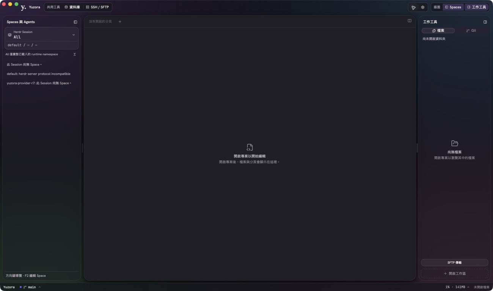
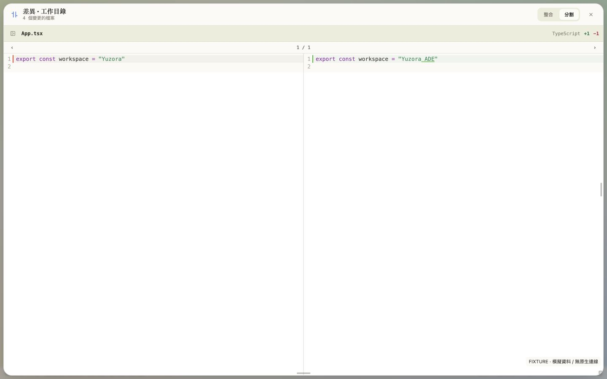
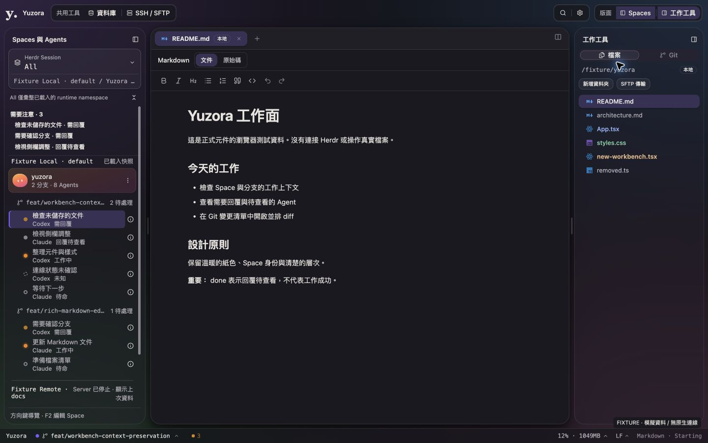
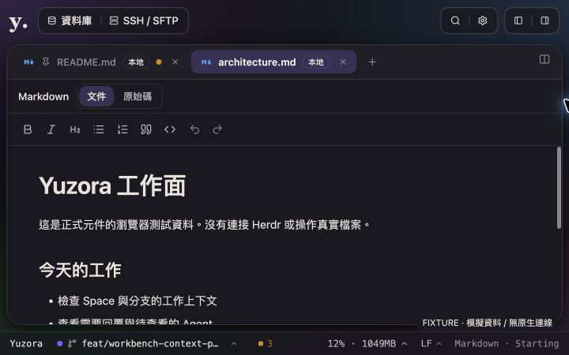
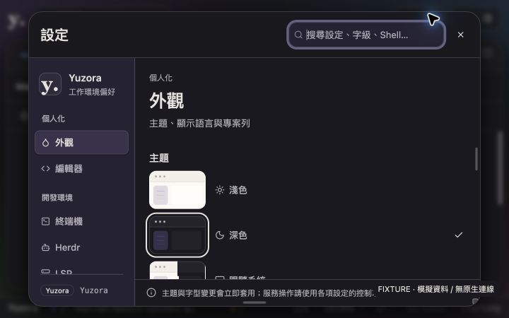

2026-09-08 · macOS arm64 · production source + 隔離 fixture
Top bar 微調與深度功能驗收
Top bar 內容與 macOS 紅綠燈同步下移 2px；左側移除「啟動 Agent」按鈕、對話框掛載和專用提示。Herdr Session、開啟資料夾與新增 Terminal 入口保留。已更新並啟動 Yuzora UI Test.app，前端由 localhost:1420 提供。
整體：證據不足以宣告所有功能全面驗收完成。 本次 UI 調整與已執行的自動化檢查通過；未發現這兩項 UI 調整的阻擋項。現有 default Herdr 顯示 protocol incompatible，完整 Agent／PTY 端到端流程尚未驗收。這份結果不代表 merge／release 授權。
品牌延續：已測畫面保留暖紙色、暖深灰、五組系統漸層、Space 獨立身份與霧面 chrome。ADE 工作流程：已驗證入口、狀態表達、鍵盤導覽、diff 與錯誤呈現；實際 Herdr 控制權、四 panes、跨 Session process 延續仍缺實機證據。
基準與變更範圍
Repo：/Users/yuuzu/HanaokaYuuzu/App/Tauri/yuzora
HEAD：711342825480a2edd5eb79005554ce828177e245；工作樹原有大量未提交的 UI 遷移修改，本次保留。未執行 production repo 的 stage、commit、push 或 worktree。沒有修改 ../yuzora-ui-demo。
src/app/workbench/workbench-shell.css:1：48px 高度不變，4px 上 padding 使置中的控制項下移 2px。Browser 量測群組頂部為 y=9px、高 34px；原先 y=7px。src-tauri/tauri.conf.json:24：trafficLightPosition.y 由 15 改為 17，已重新編譯並替換測試 App binary。src/app/workbench/HerdrLauncher.tsx：移除左側新增 Agent 的 button、state、dialog mount、launch-only notice；清掉對應 CSS 與 en／zh-TW 文案。- 驗收補修：Session 摘要的 accessibility exposure、重複執行 DB fixture 初始化，以及 ESLint 排除產生的
output/。

實機證據：macOS 原生測試 App。截圖由工具縮放為 1300×768，不能直接把截圖像素當成 App 的 logical px。
自動化與隔離整合結果
已觀察的問題與補修
1. All 視圖的 Session 摘要被隱藏於 accessibility tree 已觀察的問題 · 已修正
觸發：載入兩個 Session，其中一個 stopped，讀取 All 的 accessibility tree。證據：SpaceAgentTree.tsx:475 原本在 Session 摘要設置 aria-hidden="true"，畫面可見的「Server 已停止 · 顯示上次資料」沒有對應段落。各個 treeitem 原本仍有 aria-description，因此影響是群組摘要的閱讀連續性，而非所有停止提示都消失。
最小修正／驗收：移除摘要的 aria-hidden；Browser DOM/AX 現在有 Session 名稱及 stopped 訊息；SpaceAgentTree.test.tsx:94 驗證摘要不是 inaccessible。未使用 VoiceOver 宣稱實際朗讀順序通過。
2. DB 整合測試不能穩定重跑 已觀察的問題 · 測試 fixture 已修正
觸發：對已執行過的 Docker fixture 再跑 database matrix。證據：PostgreSQL ordered-transaction-script 原先斷言 transaction_probe.value = 0，但稍後 Q6 會把值加 1，compose volume 保留此狀態；本次實際得到 1。這是測試前置條件問題，不能推論產品 transaction 行為有缺陷。
最小修正／驗收：src-tauri/tests/database_integration.rs:1142 與 :2136 在對應 scenario 前把專用 probe 初始化為 0，並檢查 UPDATE 結果。PostgreSQL 後續兩次執行通過該情境；SQLite／PostgreSQL 完整選定矩陣通過。MSSQL 同樣的 fixture 修正已編譯，但完整 Linux scenario 尚未執行。
3. Lint 誤掃驗收產生的壓縮 bundle 已觀察的問題 · 已修正
觸發／證據：bun run lint 掃進 output/topbar-build/assets/*.js，產生 8,550 個 generated-code errors。最小修正：eslint.config.js 把 build／驗收產物目錄 output 列為 ignore，production source 仍完整受檢查。驗收：重跑為 0 errors、56 個既有 warnings。
UI 實際走查
Browser fixture 使用正式 React components／stores 與 CSS，模擬資料明示 FIXTURE；不掛載完整 App Bridges，IPC 僅放行 fixture reads，拒絕 mutations。下表的 mock 結果只支持 UI 行為。

Fixture：預設並排 Diff Modal；不代表 live repo 有這些差異。
尺寸、主題與對比
- 1440×900：兩側欄與主要文件面可同時閱讀。1280×800：dark／violet 顯示正常。
- 1024×768：右工具側欄自動收合；左欄 288px、主面 710px，document scrollWidth = 1024。
- 200%：使用 Chrome 原生 Zoom 控制，自 100% 放大至 200%，實測 CSS viewport 720×450、devicePixelRatio 2；兩側欄收合，主面及設定可捲動。測試後已還原 100%。
- 五個主題色逐一點選：青檸、海藍、紫羅蘭、珊瑚、琥珀，radio checked 與
--yz-bg 多點漸層同步改變。Light／dark 均有截圖，不替未測組合宣告 AA 全面通過。
方法：Browser computed foreground + PNG 中鄰近文字的無字背景取樣，再以 WCAG relative luminance 計算。以上四個抽樣達一般文字 4.5:1；未涵蓋所有 palette、hover、disabled、focus ring、狀態色或每個漸層位置。

Fixture：1440×900 暖深灰／紫羅蘭，Source-backed computed color 的截圖樣本。

Fixture：實際 Chrome 200%，截圖以 CSS 尺寸 720×450 輸出，非把 720px 窗口冒充縮放。

Fixture：200% 下的 Settings，分類與內容使用各自可捲動區域，關閉按鈕可到達。
尚未驗證與最多五個優先後續
- Herdr 端到端：目前原生 default 顯示
herdr server protocol incompatible；未重啟或控制使用者既有 Session。需要相容的獨立 runtime，驗證 observer/controller 交接、四 panes、agent 替換、closed pane、斷線恢復，以及 Attention→owning pane→回覆→diff/Preview→返回。現有 unit tests 不取代此項。
- 跨平台：MSSQL full matrix 在 macOS 依測試 guard 回報
requires-linux-x86_64。需 Linux x86_64 補跑；Windows native／WSL／遠端 SSH 主機也未取得本次實機證據。
- 原生文件與輸入：原生 folder picker 有開啟，但本次自動化未能完成 Go to Folder 的導覽，因此磁碟存檔、external watcher、IME composition、真實 xterm 輸入／scroll／resize、native child webview focus 尚未端到端實測。此為測試未完成，沒有據此判定產品故障。
- 完整 a11y：VoiceOver、OS reduced motion、所有模態窗 Tab／Shift+Tab 與跨 editor/terminal 快捷鍵衝突、全 palette/control 對比需追加實機矩陣。已完成的 Home／End／F2／Escape 與抽樣對比另列。
- 發行環境：目前為本機 debug App + production frontend build。正式 bundle、簽章、updater、安裝／升級流程未執行，不能以本次啟動證據代替。
應保留：纖薄分組頂欄、可收合兩侧欄、host-qualified Session 上下文、停止快照提示、明確 Agent 狀態文字、Rich／source 共用文件內容，以及佔大部分視窗的並排 Diff Modal。
Runtime 資料取自本次 source／native AX；fixture 截圖只表示模擬環境。驗收未使用舊 prototype 截圖推斷 production 功能。